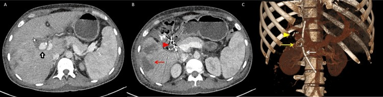
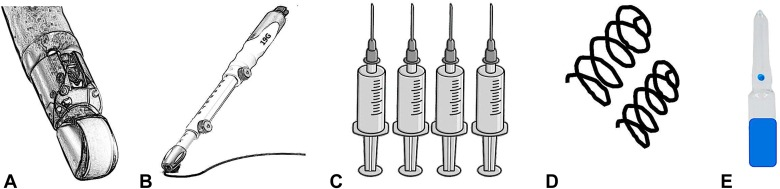
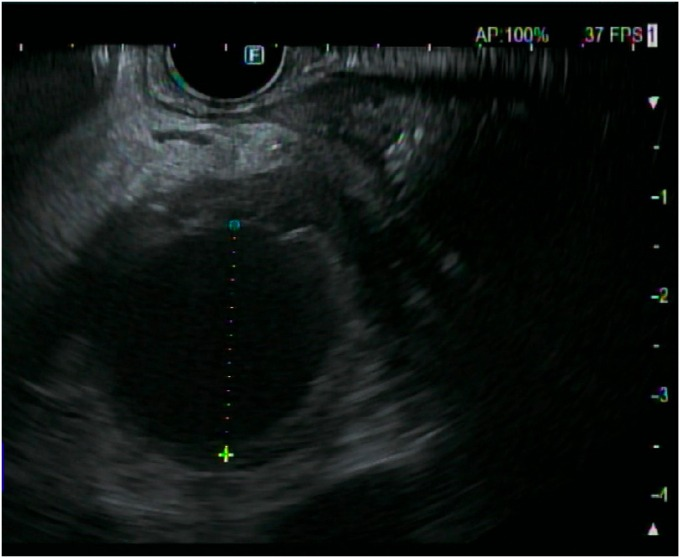
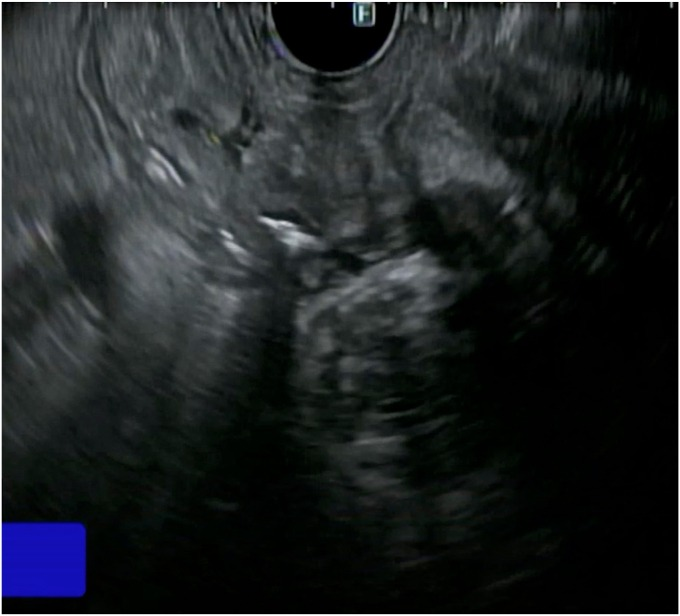
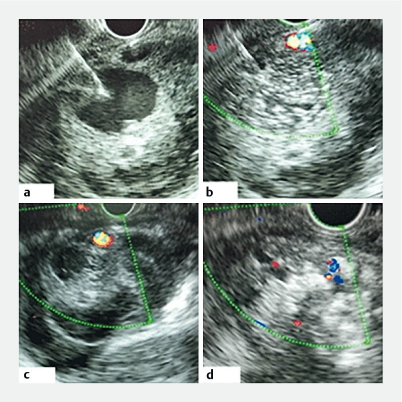
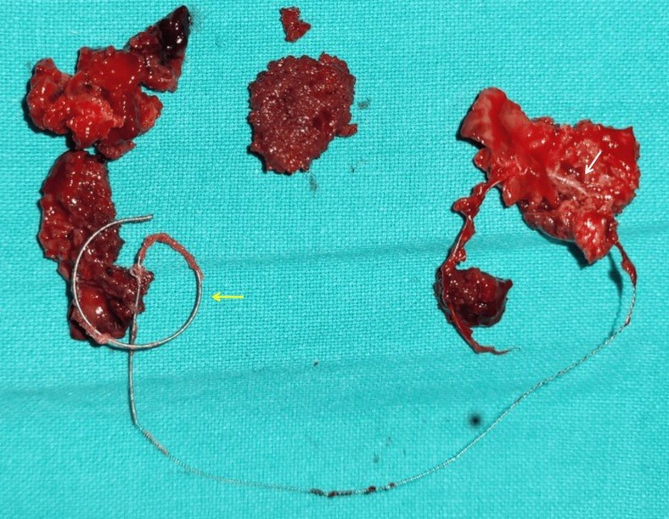
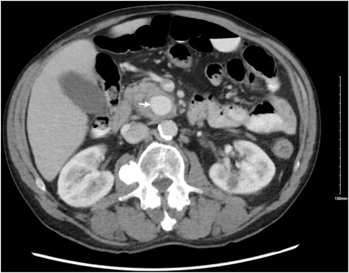
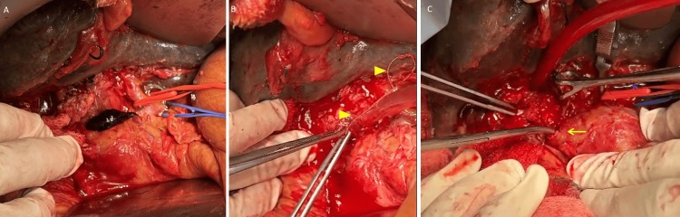

1832 — Nút mạch giả phình tạng dưới hướng dẫn EUS / EUS-guided coil + glue/thrombin for visceral artery pseudoaneurysm
Tags: pattern:gia-phinh-mach pattern:nut-mach-EUS pattern:chay-mau-tieu-hoa vung:tuy vung:ta-trang vung:lach vung:o-bung-tren protocol:EUS protocol:CTA-2-thi protocol:DSA protocol:noi-soi-tieu-hoa
Mức chắc chắn (certainty): tổng hợp y văn (literature synthesis) — ghép tổng quan hệ thống 30 nghiên cứu/122 bệnh nhân (Cureus 2026, PMC13413726, CC BY 4.0), nghiên cứu tiến cứu 8 bệnh nhân tiêm thrombin (Endosc Int Open 2020, PMC7035033, CC BY-NC-ND), ca nguyên văn giả phình nhánh tụy–tá tràng dưới (iGIE 2024, PMC12851075, CC BY 4.0), kỹ thuật (VideoGIE 2024, PMC11009482, CC BY-NC-ND), meta-analysis coil + glue (Clin Endosc 2026, PMC13624758, CC BY-NC) và 2 tổng quan EUS mạch máu (PMC11355666 CC BY; PMC8411556 CC BY-NC-SA). Số nào nguồn không đưa thì ghi "chưa rõ".
Câu chốt: DSA vẫn là tiêu chuẩn vàng (CIRSE), EUS chỉ là cứu cánh khi không tiếp cận được bằng catheter — cổ túi quá ngắn, mạch cho không xác định, giả phình không thấy trên chụp mạch, bệnh nhân không đủ điều kiện gây mê/mổ. Trong 122 bệnh nhân được EUS, thành công kỹ thuật 100%, thành công lâm sàng 94,25% (88,43–97,40%), biến chứng 11,54% (6,11–19,29%), chảy máu tái phát 3,85%. Bắt buộc coil trước – keo sau (keo một mình dễ trôi), đích là mất tín hiệu Doppler, và phải theo dõi vì keo/coil có thể ăn mòn thành tá tràng tạo rò — đúng biến chứng đã xảy ra ở chính ca trong bài tổng quan.
1. Tổng quan bệnh học – cơ chế hình ảnh
1.1 Vì sao chọn EUS: "cửa sổ" mà catheter không tới được
- Giả phình tạng thường nằm trong/ sát ổ hoại tử tụy, thành không có lớp áo giữa, nguy cơ vỡ tới 50% và tử vong sau vỡ 15–40% (PMC7035033). Điều trị chuẩn là nút mạch qua DSA.
- Vì sao DSA thất bại: (1) cổ túi ngắn/rộng không giữ được coil; (2) mạch cho rất nhỏ (nhánh tụy–tá tràng dưới) không chọn được catheter; (3) co thắt mạch hoặc giả phình đã huyết khối một phần nên không thấy trên chụp mạch; (4) giải phẫu biến thể; (5) bệnh nhân không đủ tiền/ không đồng ý mổ. Trong 122 ca, lý do hay gặp nhất là giải phẫu không thuận lợi 21,3%, DSA thất bại 15,6%, chọn EUS ngay từ đầu 15,6% (PMC13413726).
- Vì sao EUS tới được: đầu dò cong nằm sát dạ dày/tá tràng, túi giả phình trong đầu/thân tụy chỉ cách thành ống tiêu hóa vài mm đến vài cm; kim 19–22 G chọc xuyên thành dạ dày/tá tràng vào túi dưới hướng dẫn Doppler thời gian thực.
1.2 Vì sao "coil trước – keo sau" (vật lý của hỗn hợp)
- Coil tạo bộ khung kim loại làm giảm tốc dòng trong túi → máu dễ đông và keo không bị cuốn trôi ngay khi bơm.
- Keo cyanoacrylate (n-BCA/n-octyl-CA): polymer hóa tức thì khi gặp ion/nước trong máu, tạo khối cast bịt kín túi. Nếu bơm keo một mình vào túi có dòng chảy mạnh, keo có thể trôi vào tĩnh mạch/tuần hoàn phổi — đây là lý do 57,4% ca dùng coil + keo, chỉ 4,1% dùng keo đơn thuần (PMC13413726).
- Thrombin (khác keo): chuyển fibrinogen → fibrin, gây huyết khối tại chỗ trong vài giây–vài phút, không tạo khối nhựa; dùng khi túi nhỏ, thành mỏng, không muốn để lại vật liệu cứng — 32,8% ca trong tổng quan dùng thrombin đơn thuần (PMC13413726). Liều trong nghiên cứu tiến cứu: trung vị 400 IU (200–500), bơm từng 1 mL đến khi túi tăng hồi âm và mất tín hiệu Doppler (PMC7035033).
- Đích thủ thuật trên hình ảnh: mất tín hiệu Doppler trong túi + túi tăng hồi âm/đặc trên EUS; trên CT sau thủ thuật là túi không ngấm thuốc + không còn cổ thông.
1.3 Ngưỡng định lượng nằm lòng
| Đại lượng | Số liệu | Nguồn |
|---|---|---|
| Tổng quan EUS cho giả phình tạng | 30 nghiên cứu / 122 bệnh nhân; nam 88,5%, tuổi trung bình 41,9 (18–73) | PMC13413726 |
| Bệnh nền | viêm tụy mạn 69,7%, viêm tụy cấp 18% | PMC13413726 |
| Triệu chứng | xuất huyết tiêu hóa trên 68%, đau bụng 12,3%, không triệu chứng 8,2% | PMC13413726 |
| Mạch tổn thương | lách 61,8%, GDA 17,1%, vị trái 4%, mạc treo tràng trên 3,2% | PMC13413726 |
| Kích thước túi | trung bình 3,56 cm (0,7–9,7) | PMC13413726 |
| Vật liệu | coil + keo 57,4%, thrombin 32,8%, keo đơn thuần 4,1%, coil đơn thuần 2,5% | PMC13413726 |
| Kết quả | kỹ thuật 100%; lâm sàng 94,25% (88,43–97,40) | PMC13413726 |
| Biến chứng | 11,54% (6,11–19,29); chảy máu tái phát 3,85%; nhồi máu/áp-xe lách–gan 4,8%; tái thông túi 1,64% | PMC13413726 |
| Theo dõi | trung bình 22 tháng (1 tuần – 101 tháng) | PMC13413726 |
| Tiêm thrombin | 8 bệnh nhân, liều 400 IU (200–500), túi 2,9 × 2,6 cm, tắc hoàn toàn 87,5% lúc 3 tháng, tái phát 12,5% lúc 6 tuần | PMC7035033 |
| Coil + keo so với keo đơn thuần (giãn tĩnh mạch dạ dày) | tái chảy máu OR 0,28 (0,16–0,51), can thiệp lại OR 0,28 (0,15–0,52), thuyên tắc phổi OR 0,52 (0,19–1,47) | PMC13624758 |
2. Mẫu hình + chẩn đoán phân biệt theo vị trí (gamut)
2.1 Động mạch lách (61,8%) — trong thân/đuôi tụy, đường vào qua dạ dày
- Túi nằm trong nang giả/hoại tử thân–đuôi tụy; EUS từ thân vị chọc trực tiếp qua thành sau dạ dày.
- Bẫy: túi có thể không thấy trên DSA vì đã huyết khối hoặc do mạch xoắn; EUS thấy rõ vì đọc theo mô, không theo dòng.
- Nguy cơ riêng: nhồi máu/áp-xe lách 4,8% — sốt sau thủ thuật phải chụp CT, không chỉ dùng kháng sinh mù.
2.2 Động mạch vị–tá tràng (17,1%) — đầu tụy, đường vào qua tá tràng
- Túi sát hành/D1–D2; đường vào xuyên thành tá tràng ngắn nhất, nhưng chính vị trí chọc là nơi keo cast dễ ăn mòn về sau.
- Biểu hiện: xuất huyết tiêu hóa trên, hemosuccus pancreaticus (máu qua bóng Vater) nếu thông ống tụy.
2.3 Nhánh tụy–tá tràng dưới (IPDA/SMA) — "vùng khó" của DSA
- Nhánh rất nhỏ, chạy trong móc tụy/đầu tụy, thường không chọn được catheter; đây là chỉ định EUS điển hình.
- Ca nguyên văn: giả phình 2,6 × 2,4 cm ở móc tụy, thông nhánh IPDA, nội soi thấy máu chảy từ bóng Vater; EUS từ tá tràng chọc túi, đặt 2 coil rồi bơm 0,3 mL histoacryl → hết chảy máu, Hb 13 g/dL sau 1 tháng (PMC12851075).
2.4 Động mạch gan phải/trái, động mạch túi mật — sau can thiệp gan–mật
- Sau cắt túi mật nội soi, PTBD, nút mạch gan, giả phình có thể rò vào đường mật (hemobilia) hoặc vào tá tràng.
- Ca trong tổng quan: giả phình động mạch túi mật sau cắt túi mật nội soi kèm tổn thương đường mật; EUS coil + keo thất bại → rò giả phình–tá tràng + chảy máu tái phát → mổ cấp cứu (PMC13413726).
2.5 Động mạch vị trái (4%) và động mạch hoành dưới trái
- Thường sau viêm tụy mạn, túi nằm quanh thân tạng; EUS từ dạ dày dễ tiếp cận nhưng phải phân biệt với giãn tĩnh mạch dạ dày (xem mục 5).
3. Bảng so sánh phân biệt (ma trận đối chiếu)
| Thực thể (entity) | Hình ảnh/kỹ thuật điển hình | Chốt vào (rule-in) | Chốt loại (rule-out) | Gợi ý xác nhận |
|---|---|---|---|---|
| Giả phình tạng nút được bằng DSA | Túi có cổ rõ trên CTA, chọn được catheter | Cổ túi thấy trên CTA + catheter vào được nhánh cho | Cổ quá ngắn/mạch không chọn được → chuyển EUS | CTA 2–3 thì → DSA |
| Giả phình chỉ nút được bằng EUS | Túi sát dạ dày/tá tràng, DSA âm hoặc thất bại | Khoảng cách tới thành ống tiêu hóa ngắn + không có mạch chen giữa + DSA thất bại | Có mạch lớn chen giữa hoặc túi quá xa → không chọc | EUS Doppler + CTA |
| Coil + keo EUS | Bó coil trong túi + cast keo; mất Doppler | Túi có dòng chảy mạnh, cổ rộng, cần bộ khung | Túi nhỏ, thành mỏng, sát ống tiêu hóa → cân nhắc thrombin | EUS Doppler trong lúc làm; CT 1–3 tháng |
| Thrombin EUS | Túi tăng hồi âm, mất Doppler, không còn vật liệu cứng | Túi nhỏ/ trung bình, không muốn để coil, không có dòng tốc độ cao | Túi lớn, cổ rộng, dòng mạnh → dễ tái thông | Doppler 72 giờ + CT 3 tháng |
| Nút mạch DSA (coil/glue/stent-graft) | Coil/keo trong túi, kiểm tra mạch cuối | Tiêu chuẩn vàng, chọn được nhánh | Thất bại/ không tiếp cận → EUS hoặc mổ | DSA + CTA sau |
| Mổ (thắt mạch/cắt tụy) | Kiểm soát mạch trực tiếp | Không can thiệp được + huyết động không ổn định/ rò-thủng | Bệnh nhân ổn định, túi tiếp cận được → can thiệp trước | Mổ + giải phẫu bệnh |
| Giãn tĩnh mạch dạ dày | Cấu trúc dạng búi, có dòng tĩnh mạch, không có cổ động mạch | Dòng tĩnh mạch trên Doppler + bối cảnh tăng áp cửa | Có cổ động mạch + phổ động mạch → giả phình | EUS Doppler; CTA |
| Nang giả tụy tăng ngấm | Ngấm viền, không đầy cùng thì động mạch | Ngấm viền, không có cổ mạch | Đầy cùng đậm độ ĐMC ở thì động mạch → giả phình | So đậm độ với ĐMC |

(A) Túi giả phình động mạch túi mật (mũi tên đen); (B) artifact do coil đã đặt (đầu mũi tên đỏ) + áp-xe gan phải (mũi tên đỏ); (C) dựng hình 3D — coil ở hố túi mật (mũi tên vàng), clip mổ cũ, stent ống mật chủ. Đây là ca EUS coil + keo thất bại vì còn tổn thương đường mật và rò sang tá tràng. Nguồn: Cureus 2026 (PMC13413726), Fig. 1 — CC BY 4.0.Dấu hiệu chốt trên EUS (đọc nhanh)
- Cổ túi + phổ động mạch trên Doppler = giả phình; búi không cổ + phổ tĩnh mạch = giãn tĩnh mạch.
- Khoảng cách từ đầu dò tới túi càng ngắn càng an toàn; phải chắc không có động mạch lớn nằm giữa đường kim.
- Sau bơm: túi đặc/tăng hồi âm + mất Doppler; nếu còn dòng → thêm coil hoặc thêm keo, đừng kết thúc sớm.
4. Protocol chụp/can thiệp + hệ phân độ
4.1 Trước thủ thuật
- CTA bụng 2–3 thì, lát 0,5–1 mm, dựng MIP/coronal: xác định vị trí túi, cổ túi, mạch cho–mạch nhận, khoảng cách tới dạ dày/tá tràng, có mạch lớn chen giữa không.
- Nội soi tiêu hóa trên tìm nguồn chảy/máu ở bóng Vater, nhưng không trì hoãn can thiệp.
- Đánh giá đông máu (SIR): INR < 1,5–1,8**, tiểu cầu **> 50 × 10³/µL cho thủ thuật nguy cơ cao; kháng sinh dự phòng 30 phút trước (PMC7035033).
- Chuẩn bị phương án dự phòng: đặt sẵn kế hoạch DSA và mổ nếu EUS thất bại/chảy máu; gây mê toàn thân thường cần.
4.2 Kỹ thuật EUS (theo bước)
- Ống soi siêu âm cong (curvilinear) → định vị túi, Doppler màu + phổ xác nhận dòng động mạch và cổ túi.
- Kim 19 G (cho coil) hoặc 22 G (cho thrombin/keo) chọc xuyên thành vào túi dưới hướng dẫn siêu âm; xác nhận máu phụt/ kim trong lòng túi.
- Coil trước: đưa coil 0,035 hoặc 0,018 inch (kích thước theo túi, ví dụ 16 mm × 14 cm và 20 mm × 20 cm) đến khi dòng chậm/ giảm (PMC12851075, PMC11009482).
- Keo sau: bơm n-BCA hoặc n-octyl-CA (thường trộn lipiodol để nhìn huỳnh quang), thể tích nhỏ 0,3–1 mL, bơm chậm đến khi túi đặc và mất Doppler.
- Hoặc thrombin: 200–500 IU, bơm từng 1 mL đến khi túi tăng hồi âm, kiểm tra Doppler (PMC7035033).
- Kết thúc: Doppler không còn dòng trong túi, không thấy keo trôi vào tĩnh mạch; rút kim, quan sát chảy máu qua đường chọc.

Bộ dụng cụ: ống soi siêu âm cong (A), kim FNA 19 G (B), bơm dung dịch (C), coil 0,035 hoặc 0,018 inch (D), keo n-octyl-cyanoacrylate hoặc n-butyl-cyanoacrylate (E). Nguồn: VideoGIE 2024 (PMC11009482), Fig. 2 — CC BY-NC-ND 4.0, nguyên bản.
EUS: túi giả phình 2,5 × 2,5 cm trong đầu tụy, tương ứng với CT — xác định cửa sổ chọc và khoảng cách tới thành tá tràng trước khi đưa kim. Nguồn: iGIE 2024 (PMC12851075), Fig. 4 — CC BY 4.0.
EUS sau khi đặt 2 coil và bơm 0,3 mL histoacryl: túi đặc, tăng hồi âm, không còn khoang dòng chảy. Nguồn: iGIE 2024 (PMC12851075), Fig. 6 — CC BY 4.0.
(a) Kim 22 G vào túi giả phình; (b) mất tín hiệu Doppler ngay sau bơm; (c–d) túi huyết khối hoàn toàn trên EUS sau 72 giờ. Nguồn: Endosc Int Open 2020 (PMC7035033), Fig. 2 — CC BY-NC-ND 4.0, nguyên bản.4.3 Sau thủ thuật và theo dõi
- Theo dõi 24–48 giờ: Hb, đau bụng, sốt, dấu hiệu chảy máu tiêu hóa; không xuất viện ngay ở ca nguy cơ cao.
- CT/CTA hoặc siêu âm Doppler tại 1 tháng và 3 tháng; sau đó 6–12 tháng nếu ổn định. Trong tổng quan, theo dõi trung bình 22 tháng (PMC13413726).
- Nội soi lại nếu có máu; đặc biệt sau coil + keo ở GDA/tá tràng vì nguy cơ rò do cast keo.
4.4 Thuật toán chọn đường can thiệp
flowchart TD
A[Gia phinh mach tang + chay mau/nguy co vo] --> B[DSA: nut mach la tieu chuan vang]
B -->|Thanh cong| C[Theo doi CTA 1-3 thang]
B -->|That bai hoac khong tiep can| D{Co cua so EUS an toan?}
D -->|Khong| E[Mo: that mach/cat tuy hoac can thiep qua da]
D -->|Co| F{Tui lon, co rong, dong manh?}
F -->|Co| G[Dat coil truoc roi bom keo]
F -->|Khong| H[Thrombin 200-500 IU tung 1 mL]
G --> I{Mat tin hieu Doppler?}
H --> I
I -->|Khong| J[Them coil hoac keo, hoac chuyen DSA/mo]
I -->|Co| K[Theo doi 24-48 gio; CTA 1 va 3 thang]
K --> L{Sot, dau, vang da, xuat huyet tai phat?}
L -->|Co| M[CTA va noi soi: tim ro, thung, nhiem]
L -->|Khong| N[Tiep tuc theo doi 6-12 thang]
5. Biến thể bình thường và cạm bẫy
- "Mất Doppler" giả: khí/coil trong túi tạo bóng lưng âm che dòng — phải xoay đầu dò nhiều góc, bật Doppler năng lượng và xác nhận bằng CTA sau 24–48 giờ.
- Rò do cast keo: ca trong tổng quan bị rò giả phình–tá tràng ngay tại vị trí kim chọc, do (1) còn dòng vào túi, (2) viêm mô tại chỗ, (3) keo ăn mòn thành ruột — ổ keo + coil lộ vào tá tràng phải mổ (PMC13413726). Phòng: bơm ít keo, đặt coil làm khung, đảm bảo tắc hoàn toàn dòng vào, tránh chọc sát thành tá tràng.

Mảnh cast keo (mũi tên vàng) dính máu cục, bên trong có coil (mũi tên trắng) — chính khối này ăn mòn qua thành tá tràng tạo rò. Nguồn: Cureus 2026 (PMC13413726), Fig. 3 — CC BY 4.0.- Thuyên tắc keo về phổi: hiếm nhưng có thật; sau thủ thuật nếu khó thở/ đau ngực phải X-quang/CT ngực. Meta coil + keo ở giãn tĩnh mạch cho thấy không tăng thuyên tắc phổi so với keo đơn thuần (OR 0,52; 0,19–1,47) (PMC13624758).
- Nhồi máu/áp-xe lách (4,8%) và nhồi máu gan: sốt sau thủ thuật không được quy hết cho nhiễm trùng ổ dịch — chụp CT có cản quang.
- Nhầm giãn tĩnh mạch với giả phình: búi giãn có phổ tĩnh mạch, bóp không xẹp; chọc nhầm có thể gây chảy máu ồ ạt — Doppler phổ là bắt buộc, không chỉ Doppler màu.
- Không phải lựa chọn đầu tay: tổng quan kết luận EUS là cứu cánh, không thay thế DSA; dùng EUS ngay từ đầu chỉ nên trong nghiên cứu/ ca đặc biệt (PMC13413726).
- Bỏ sót tổn thương đường mật đi kèm: ca thất bại có hẹp đường mật Strasberg V — nếu chỉ xử lý mạch mà bỏ đường mật, bệnh nhân vẫn nhiễm trùng/ vàng da sau đó.
6. Tự lượng giá — Blind Quiz
Ca 1 — Nam 45 tuổi, viêm tụy mạn, xuất huyết tiêu hóa; CTA thấy túi ở móc tụy, DSA không chọn được nhánh cho.

- Hỏi: mô tả túi? Vì sao DSA khó? Đường vào nào hợp lý và cần kiểm tra gì trước khi chọc?
Bấm để hiện đáp án (findings + chẩn đoán)
- Findings: túi 2,6 × 2,4 cm trong móc tụy, ngấm thuốc cùng thì động mạch, thông với nhánh động mạch tụy–tá tràng dưới (IPDA).
- Vì sao DSA khó: nhánh rất nhỏ, xoắn, xuất phát từ mạc treo tràng trên, khó chọn catheter.
- Đường vào: EUS từ tá tràng — kim 19 G, đặt 2 coil rồi 0,3 mL histoacryl; đích là mất Doppler.
- Kiểm tra trước chọc: Doppler phổ xác nhận dòng động mạch, đo khoảng cách tới thành tá tràng, loại trừ mạch lớn nằm giữa đường kim.
- Nguồn ảnh: iGIE 2024 (PMC12851075), Fig. 1 — CC BY 4.0.
Ca 2 — Bệnh nhân sau cắt túi mật nội soi, vàng da + sốt; CT có túi cạnh gan, đã đặt coil + keo qua EUS, nay xuất huyết tiêu hóa tái phát.

- Hỏi: biến chứng gì đã xảy ra? Ba cơ chế? Xử trí?
Bấm để hiện đáp án (findings + chẩn đoán)
- Findings: (A) túi giả phình + cục máu lớn, đã kiểm soát động mạch gan; (B) coil cũ được lấy ra khỏi túi; (C) lỗ rò tá tràng lộ ra sau khi lấy cast keo + coil + máu cục.
- Chẩn đoán: rò giả phình–tá tràng sau EUS coil + keo, gây chảy máu tái phát.
- Ba cơ chế: (1) không tắc hoàn toàn dòng vào; (2) viêm mô tại chỗ do thủ thuật; (3) keo ăn mòn thành tá tràng.
- Xử trí: mổ cấp cứu lấy coil/cast, khâu rò; sau đó sửa đường mật (hẹp Strasberg V) thì hai.
- Nguồn ảnh: Cureus 2026 (PMC13413726), Fig. 2 — CC BY 4.0.
Ca 3 — Bệnh nhân giả phình động mạch lách 2,5 cm trong nang giả tụy; chọn tiêm thrombin dưới EUS.
- Hỏi: liều và cách bơm? Đích đánh giá? Theo dõi sau bao lâu?
Bấm để hiện đáp án (findings + chẩn đoán)
- Findings: (a) kim 22 G trong túi; (b) mất tín hiệu Doppler sau bơm; (c–d) túi huyết khối trên EUS 72 giờ.
- Liều/cách bơm: thrombin 200–500 IU (trung vị 400 IU), bơm từng 1 mL đến khi túi tăng hồi âm.
- Đích: mất Doppler + túi đặc; theo dõi Doppler 72 giờ, CT 3 tháng.
- Giới hạn: nghiên cứu 8 bệnh nhân, tắc hoàn toàn 87,5%, tái phát 12,5% sau 6 tuần — không dùng cho túi lớn/cổ rộng/dòng mạnh.
- Nguồn ảnh: Endosc Int Open 2020 (PMC7035033), Fig. 2 — CC BY-NC-ND 4.0.
Bài liên quan chéo
- 1819 – Chảy máu tiêu hóa muộn do giả phình động mạch tạng
- 1831 – Coil di trú & xuyên thành sau nút mạch tạng
- 920 – Nút mạch cầm máu tiêu hóa
- 135 – Viêm tụy cấp (Atlanta)
- 900 – Đại cương IR: kim, đông máu & cửa sổ chọc
Ảnh & giấy phép
1832_nut-mach-eus_CT_PMC13413726-f1.jpg,1832_nut-mach-eus_Mo_PMC13413726-f2.jpg,1832_nut-mach-eus_Glue-cast_PMC13413726-f3.jpg— Cureus 2026 (PMC13413726), CC BY 4.0.1832_nut-mach-eus_CT_PMC12851075-f1.jpg,1832_nut-mach-eus_EUS_PMC12851075-f4.jpg,1832_nut-mach-eus_EUS-coil-glue_PMC12851075-f6.jpg— iGIE 2024 (PMC12851075), CC BY 4.0.1832_nut-mach-eus_EUS-thrombin_PMC7035033-f2.jpg— Endosc Int Open 2020 (PMC7035033), CC BY-NC-ND 4.0, nguyên bản.1832_nut-mach-eus_Dung-cu_PMC11009482-f2.jpg— VideoGIE 2024 (PMC11009482), CC BY-NC-ND 4.0, nguyên bản.- Chi tiết từng file + ghi chú phái sinh:
images/CREDITS.md.
Không dùng để chẩn đoán độc lập khi chưa có người hướng dẫn.